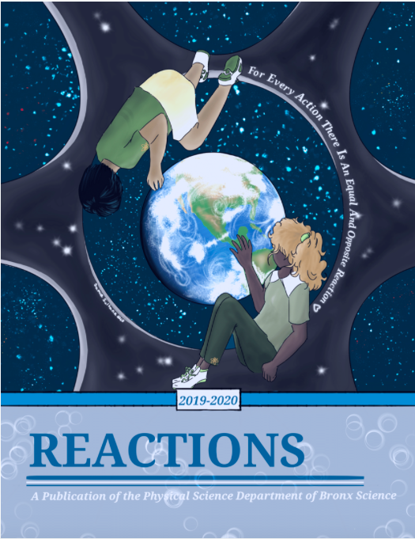
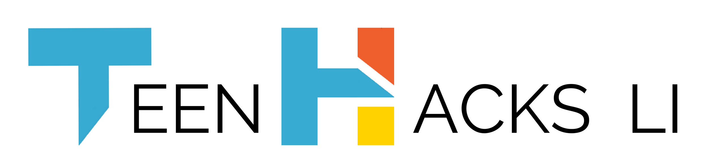
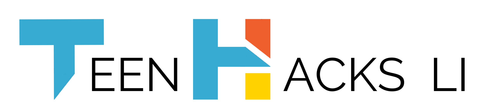
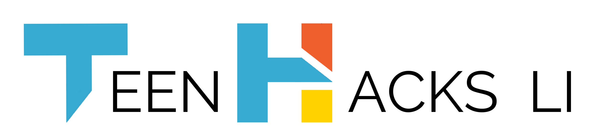

Other Miscellaneous Skills
Programming Skills
- Release of Choice! (The Decision-Making App) on the Amazon App Store.
- Release of the Elements Block Mod for Minecraft 1.7.10 and 1.8.
- Over 9,000 downloads and reviews in Spanish, Portuguese and Vietnamese!
- Intermediate Experience in the 1.7.10 and 1.8 Minecraft Forge SDK.
- Intermediate-Advanced Knowledge in Java and Python 3.
- Intermediate Experience in the Android SDK and Android Studio.
- Intermediate Experience in Mathematical Exploration with numpy.
- Intermediate Experience in Data Analysis with matplotlib and pandas.
- Intermediate-Advanced Knowledge in Machine Learning with scikit-learn.
- Intermediate-Advanced Knowledge in Deep Learning with TensorFlow 2.0 and Keras.

Leadership Skills
- Created Bronx Science's Machine Learning Club in 2019-2020.
- Current Editor-In-Chief of Bronx Science's revived physical science magazine, Reactions.
- Current Executive Director of Long Island's #1 premier hackathon, TeenHacksLI.

 


Writing & Blogging Skills
I was a contributing writer and cofounder for The Perceptron, a student-run blog about machine learning (ML) and artificial intelligence (AI) from the creators of the Machine Learning Club. The blog is about the innovations and controversies of ML and AI in the United States of America via current events through extensive research. Anyone is able to subscribe to the online newspaper and obtain biweekly updates about these topics and anyone is free to comment about the quality of the writing and the feedback about the topic. You can see the articles from all of the writers at this link.
Check out my articles below!
- Convolutional Neural Networks and Neural Style Transfer
- This article explains the phenomenon of neural style transfer and the ability for AI to be creative and merge artworks together to replicate art. You can even use this technique to paint your own photos in the style of Starry Night or The Scream. This technique is readily available for intermediate users of machine learning to try via the tutorials featured in the TensorFlow website.
- AlphaGo and Reinforcement Learning
- This article describes in detail the emerging and popular field of reinforcement learning and its implications for AI. Via the mathematical formulas that form Deep-Q networks, we can create AI that can play games to perfection and reach easter eggs we might not have even heard of until now such as Level 256 in Pac-Man. Recently, an AI that was trained via reinforcement learning actually beat the best player in the Chinese game of Go and is now the ultimate player of the game. It is aptly named AlphaGo for its outstanding achievements. This goes to show the power that AI can have if trained maximally for any purpose.
- Decision Trees and Spectroscopy
- As the most popular article on The Perceptron, this article explains how a very common machine learning technique can be taken by chemical physical levels and be used to analyze properties that humans cannot see. Specifically, researchers from the University of Tokyo used decision trees in order to analyze the light spectra of certain compounds that cannot be seen visually or geometrically unlike in a flame test. By comparing this spectra to other elements, these researchers could finally understand the composition of the compound and give it a complex IUPAC name reflecting all of the elements found in it. In this way, machine learning and chemistry combine to understand new minerals that could not be found by one field alone.
- Even though the pictures do not render in the article, all figures from the original paper can be found here or below.